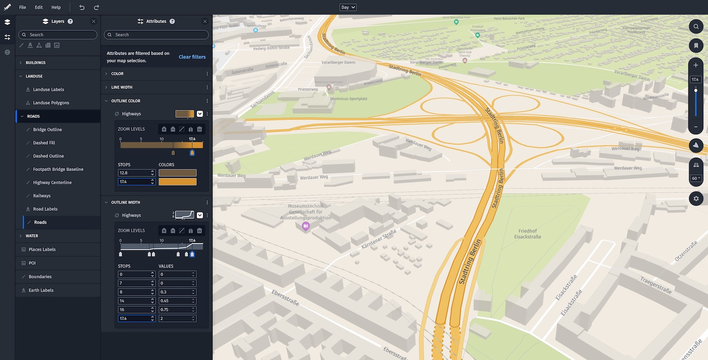
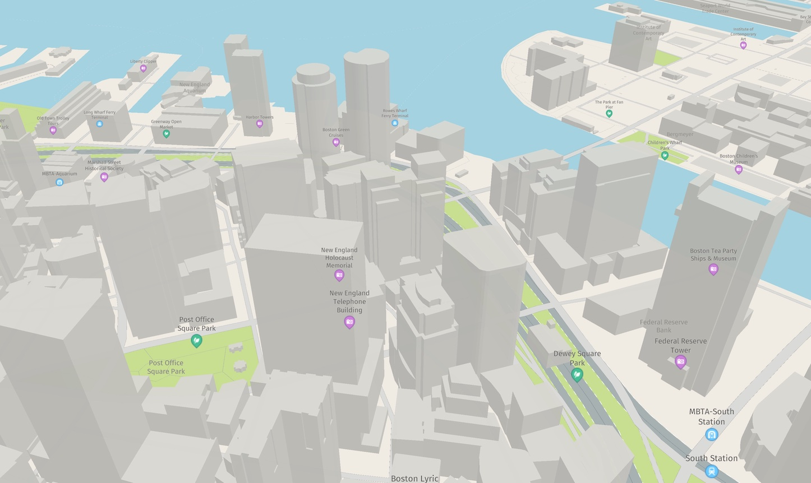
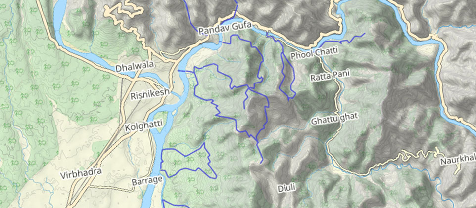

Customize the map style
The HERE SDK offers a versatile solution for customizing map styles by allowing you to load custom map schemes. You can create new styles from scratch or modify existing MapScheme styles. The HERE SDK includes several pre-configured MapScheme styles, such as normalDay and satellite.
For more information on existing MapScheme styles, see Add predefined map styles. To modify existing map schemes or create new ones, you can use the HERE Style Editor. Detailed instructions are provided below. Additionally, this guide covers how to add custom raster styles on top of a loaded map scheme.
Note
The web-based unified HERE Style Editor is available on the HERE platform. It is compatible with the Maps API for JavaScript (JSAPI) and the HERE SDK since version 4.12.1.0. Custom map styles that have been made with the legacy desktop editor need to be migrated to the new HERE Style Editor format. Get in touch with your HERE representative to discuss potential style updates from legacy editions.
Add custom map styles
The most flexible solution to customize the map is to create your own MapScheme styles using a configuration file generated with the WYSIWYG HERE Style Editor.

Take a look at the user guide of the HERE Style Editor for more information. The latest updates can be found in this blog post.
In order to use the HERE Style Editor, perform the following steps:
- Sign-up for an account on the HERE platform, if not done already.
- Confirm and finalize your account generation by providing addition details.
- Select HERE Style Editor from the Launcher menu on your landing page on the HERE platform or use this direct link after signing in.
- Start utilizing the HERE Style Editor by selecting one of the existing base styles you want to customize.
- Apply your customizations to the map style.
- Finalize your work by exporting the customized map style to your local computer via File -> Export Map Style and load it to your application as described below.
Copy the resulting JSON into the "assets" directory of your project. If not already added, you can add that folder via Android Studio (Right-click on the project: New -> Folder -> Assets Folder). You can also manually generate the folder: /your_app/assets. This folder also needs to be included into your pubspec.yaml:
# The following section is specific to Flutter.
flutter:
# Here we store our custom map styles.
assets:
- assets/
Load the style into a map scene as follows:
void loadCustomMapStyle() {
File file = File("assets/custom-dark-style-neon-rds.json");
String filePath = file.path;
_hereMapController.mapScene.loadSceneFromConfigurationFile(filePath, (MapError? error) {
if (error == null) {
// Scene loaded.
} else {
print("Map scene not loaded. MapError: " + error.toString());
}
});
}
In the above snippet, we use Flutter's File class to verify that the *.json file exists at the expected location.

Using custom map styles can be very effective to differentiate your app from other map applications. In addition, it is possible to change map styles on-the-fly, for example, to shift the user's attention to certain map elements based on the current state of your app.

Note that when you are doing local changes on the JSON style file, consider to call mapScene.reloadScene() to ensure the entire scene is reloaded again without using any cached data.
Learn more in this blog post on how to create custom map designs with the HERE Style Editor. More related blog posts can be found here.
Add custom raster layers
Another alternative to customize the map's look is to add your own raster tile service on top of the HERE MapScheme styles. This can be your own server where you host tiles that you want to show as an overlay on top of selected areas of the world - or a public tile server such as OpenStreetMap. Fully opaque and transparent map tile overlays are supported. It is also possible to add more than one raster layer to the map at the same time.
Note
Note that this is a beta release of this feature, so there could be a few bugs and unexpected behaviors. Related APIs may change for new releases without a deprecation process.
To add custom raster layers, you need to create a RasterDataSource. A RasterDataSource represents the source of raster tile data to display. It also allows changing its configuration. With a RasterDataSourceConfiguration you can specify a configuration for the data source, including URL, tiling scheme, storage levels and caching parameters.
Finally, with the MapLayerBuilder you can create a MapLayer to add a renderable map overlay to the map.
- Use
MapLayerVisibilityRangeto specify at which zoom levels the map layer should become visible. - Use the
MapLayerPriorityto specify the draw order of theMapLayer. - Use the
MapContentTypeto specify the type of data to be shown by theMapLayer. - Optionally, use the
StyleAPI to adjust properties such as opacity or brightness at runtime. More about this can be found in the style guide for custom layers.
In case of raster tile images, use MapContentType.rasterImage.
Default map gesture actions such as pinch, rotate and zoom behave in the same way for raster tiles as for HERE vector maps - except for a few differences: for example, raster tiles are loaded as bitmaps and therefore a rotated raster map tile rotates all labels and street names contained together with the tile.
Note
When loading a map scene with a custom map style or the default map style, the map will be rendered using vector tiles where the map information is represented as vector data consisting of vertices and paths for better scalability and performance. By contrast, raster tiles are regularly spaced and square, and consist of bitmap images that represent only pixel information. Note that the satellite map style is also raster based.
Create a RasterDataSource as follows:
RasterDataSource _createRasterDataSource(String dataSourceName) {
// Note: As an example, below is an URL template of an outdoor layer from thunderforest.com.
// On their web page you can register a key. Without setting a valid API key, the tiles will
// show a watermark.
// More details on the terms of usage can be found here: https://www.thunderforest.com/terms/
// For example, your application must have working links to https://www.thunderforest.com
// and https://www.osm.org/copyright.
// For the below template URL, please pay attention to the following attribution:
// Maps © www.thunderforest.com, Data © www.osm.org/copyright.
// Alternatively, choose another tile provider or use the (customizable) map styles provided by HERE.
final templateUrl = 'https://tile.thunderforest.com/outdoors/{z}/{x}/{y}.png';
// The storage levels available for this data source. Supported range [0, 31].
List<int> storageLevels = [2, 3, 4, 5, 6, 7, 8, 9, 10, 11, 12, 13, 14, 15, 16];
RasterDataSourceProviderConfiguration rasterProviderConfig =
RasterDataSourceProviderConfiguration.withUrlProviderAndDefaults(
TilingScheme.quadTreeMercator, storageLevels, TileUrlProviderFactory.fromXyzUrlTemplate(templateUrl));
// Raster tiles are stored in a separate cache on the device.
String path = "cache/raster/mycustomlayer";
int maxDiskSizeInBytes = 1024 * 1024 * 128; // 128 MB
RasterDataSourceCacheConfiguration cacheConfig = RasterDataSourceCacheConfiguration(path, maxDiskSizeInBytes);
// Note that this will make the raster source already known to the passed map view.
return RasterDataSource(_hereMapController.mapContext,
RasterDataSourceConfiguration.withDefaults(dataSourceName, rasterProviderConfig, cacheConfig));
}
Note that - if desired - you can also hook into the calls of the templateUrl like so:
RasterDataSourceProviderConfiguration rasterProviderConfig =
RasterDataSourceProviderConfiguration.withUrlProviderAndDefaults(TilingScheme.quadTreeMercator, storageLevels,
(int x, int y, int level) {
return "https://tile.thunderforest.com/outdoors/$level/$x/$y.png";
});
The latter gives you an option to listen to each tile request and, for example, allows for finer control on the requested tiles, if needed.
Note that custom raster layers use their own cache directory, which can be independent of the map cache that is used for vector-based map data. Find more details in the API Reference for the RasterDataSourceConfiguration.
This code uses a tile source from Thunderforest. More details on the terms of usage can be found on https://www.thunderforest.com/terms/ and on https://www.osm.org/copyright.
Note that you can also use other tile sources that follow the OSM standard style format /zoom/x/y.png. The templateURL should look like this:
https://YourRasterTileService.com/{zoom}/{xTile}/{yTile}.png
Here, the zoom value represents the map's current zoom level, and xTile and yTile defines the horizontal and vertical tile numbers. For example, to show the standard OSM map, use the following template URL:
let templateUrl = "https://a.tile.openstreetmap.org/{z}/{x}/{y}.png"
More tile servers following the OSM format are listed here. Note that the HERE SDK supports only tile servers. Servers that provide vector data are not supported. Vector based tiles can only be used with the HERE Style Editor and the embedded map styles (see above).
Once a tile source is created, a MapLayer can be built:
MapLayer _createMapLayer(String dataSourceName) {
// The layer should be rendered on top of other layers including the "labels" layer
// so that we don't overlap the raster layer over POI markers.
MapLayerPriority priority = MapLayerPriorityBuilder().renderedAfterLayer("labels").build();
// And it should be visible for all zoom levels.
MapLayerVisibilityRange range = MapLayerVisibilityRange(0, 22 + 1);
try {
// Build and add the layer to the map.
MapLayer mapLayer = MapLayerBuilder()
.forMap(_hereMapController.hereMapControllerCore) // mandatory parameter
.withName(dataSourceName + "Layer") // mandatory parameter
.withDataSource(dataSourceName, MapContentType.rasterImage)
.withPriority(priority)
.withVisibilityRange(range)
.build();
return mapLayer;
} on MapLayerBuilderInstantiationException {
throw Exception("MapLayer creation failed.");
}
}
Above we reference the "labels" layer. More information on existing layers and their names can be found in the API Reference for the MapLayerPriorityBuilder.
Finally, the visibility can be controlled by enabling or disabling the layer as shown below. Note that we also need to provide a unique name. Each RasterDataSource can be created only once:
String dataSourceName = "myRasterDataSourceOutdoorStyle";
_rasterDataSourceOutdoorStyle = _createRasterDataSource(dataSourceName);
_rasterMapLayerOutdoorStyle = _createMapLayer(dataSourceName);
_rasterMapLayerOutdoorStyle?.setEnabled(true);
The resulting layer looks like this:

The above screenshot shows that you can easily combine custom raster tiles with other HERE SDK features. For example, you can render several MapMarker instances on top of the tile data from a tile server.
Note
One of the main advantages of custom raster layers is that you can easily enhance the HERE map styles with a transparent custom tile source on top, for example, to show weather data or any other data you want to see on top of the map. When using an opaque raster tile source, it is recommended to combine this with an empty base map style.
If you do not use an empty base map style, then the underlying map scheme will "shine" through until the raster layer tiles are loaded. The accompanying example app shows how this looks like.
There are certain other parameters that you can adjust:
- If your app uses multiple raster layers, you can define a load priority when building a layer with the
MapLayerBuilder. This allows to specify an integer value: Higher values will lead to load the layer before layers with lower values. Note that this controls just the time when the layer is loaded. - The
MapLayerPrioritycontrols how the layer is rendered: For example, optionally, you can appendrenderedLast()which means that the layer will be rendered on top of all other layers. - For showing transparent map styles, set
rasterProviderConfig.hasAlphaChannelto true. - For more parameters, please consult the API Reference.
Add custom line layers
Custom geodetic lines can be added to the map's look by adding your own custom data layer on top of the HERE MapScheme styles.
A geodetic line is the shortest line between any two points on the Earth's surface, with each point represented through geodetic coordinates.
Note
Note that this is a beta release of this feature, so there could be a few bugs and unexpected behaviors. Related APIs may change for new releases without a deprecation process.
To add custom line layers, you need to create a LineDataSource. A LineDataSource represents the source of geodetic lines data to display.
Each geodetic line can be coupled with a set of custom data attributes that can be used to customize the look of each line when displayed on top of the map.
On top of a LineDataSource, with MapLayerBuilder you can create a MapLayer to add a renderable map overlay to the map.
- Use
MapLayerVisibilityRangeto specify at which zoom levels the map layer should become visible. - Use the
MapLayerPriorityto specify the draw order of theMapLayer. - Use the
MapContentTypeto specify the type of data to be shown by theMapLayer. In case of geodetic lines, useMapContentType.LINE. - Use the
StyleAPI to adjust properties such as width or color at runtime. More about this can be found in the style guide for custom layers.
Create a LineDataSource as follows:
String myCustomLinesDataSourceName = "MyCustomLines";
LineDataSource createLineDataSource(String dataSourceName) {
// Creates a new LineDataSource, without custom data.
// To also add custom lines while creating the data source, `LineDataSourceBuilder.withPolyline` API can be used.
return LineDataSourceBuilder(_hereMapController.mapContext).withName(dataSourceName).build();
}
Once a line data source is created, custom geodetic lines can be added to it:
void addLinesToDataSource(LineDataSource linesDataSource) {
// Prepare the geodetic list of points that make-up the line.
List<GeoCoordinates> lineGeoPoints = [GeoCoordinates(point1GeoLatitude, point1GeoLongitude),
...
GeoCoordinates(pointNGeoLatitude, pointNGeoLongitude)];
// Optional: Prepare a list of custom attributes.
DataAttributes lineAttributes = DataAttributesBuilder().with("id", "my first line").build();
// Add the line to data source.
linesDataSource.add(LineDataBuilder().withGeometry(GeoPolyline(lineGeoPoints))
.withAttributes(lineAttributes)
.build();
// Repeat above steps to add more custom lines to the data source.
// Alternatively, use `LineDataSource.addLines` to add multiple custom lines with a single call.
...
}
Prepare a custom style for your lines layer:
Note
The layer value in the style string must match the name given to the MapLayer in the next steps. In this example, the dataSourceName used is MyCustomLines and the layer name MyCustomLinesLayer.
String myCustomLayerStyle = """
{
"styles": [
{
"layer": "MyCustomLinesLayer",
"technique": "line",
"attr": {
"width": 5.0,
"color": "#ff0000ff"
}
}
]
}
""";
Style _createCustomStyle() {
try {
return JsonStyleFactory.createFromString(myCustomLayerStyle);
} on JsonStyleFactoryInstantiationException {
// Custom exception handling.
...
}
return null;
}
To display a LineDataSource on top of a map, a MapLayer can be built:
MapLayer _createMapLayer(String dataSourceName, Style customStyle) {
// Set the layer to be rendered on top of other layers.
MapLayerPriority priority = MapLayerPriorityBuilder().renderedLast().build();
// And make it visible for all zoom levels.
MapLayerVisibilityRange range = MapLayerVisibilityRange(0, 22 + 1);
try {
// Build and add the layer to the map.
MapLayer mapLayer = MapLayerBuilder()
.forMap(_hereMapController.hereMapControllerCore) // mandatory parameter
.withName(dataSourceName + "Layer") // mandatory parameter
.withDataSource(dataSourceName, MapContentType.line)
.withPriority(priority)
.withVisibilityRange(range)
.withStyle(customStyle)
.build();
return mapLayer;
} on MapLayerBuilderInstantiationException {
throw Exception("MapLayer creation failed.");
}
}
Add custom polygon layers
Custom geodetic polygons can be added to the map's look by adding your own custom data layer on top of the HERE MapScheme styles.
A geodetic polygon is defined by an exterior geodetic boundary, and optionally one or more interior boundaries. Each boundary is made from a closed sequence of geodetic points (the first point is the same as the last one).
Note
Note that this is a beta release of this feature, so there could be a few bugs and unexpected behaviors. Related APIs may change for new releases without a deprecation process.
To add custom polygon layers, you need to create a PolygonDataSource. A PolygonDataSource represents the source of geodetic polygon data to display.
Each geodetic polygon can be coupled with a set of custom data attributes that can be used to customize the look of each polygon when displayed on top of the map.
On top of a PolygonDataSource, with MapLayerBuilder you can create a MapLayer to add a renderable map overlay to the map.
- Use
MapLayerVisibilityRangeto specify at which zoom levels the map layer should become visible. - Use the
MapLayerPriorityto specify the draw order of theMapLayer. - Use the
MapContentTypeto specify the type of data to be shown by theMapLayer. In case of geodetic polygons, useMapContentType.POLYGON. - Use the
StyleAPI to adjust properties such as color at runtime. More about this can be found in the style guide for custom layers.
Create a PolygonDataSource as follows:
String myCustomPolygonsDataSourceName = "MyCustomPolygons";
PolygonDataSource createPolygonDataSource(String dataSourceName) {
// Creates a new PolygonDataSource, without custom data.
// To also add custom polygons while creating the data source, `PolygonDataSourceBuilder.withPolygon` API can be used.
return PolygonDataSourceBuilder(_hereMapController.mapContext).withName(dataSourceName).build();
}
Once a polygon data source is created, custom geodetic polygons can be added to it:
void addPolygonsToDataSource(PolygonDataSource polygonsDataSource) {
// Prepare the geodetic list of points that make-up the polygon.
// Note: The point list must be closed and given in clockwise order.
List<GeoCoordinates> polygonGeoPoints = [GeoCoordinates(point1GeoLatitude, point1GeoLongitude),
...,
GeoCoordinates(pointNGeoLatitude, pointNGeoLongitude),
...,
GeoCoordinates(point1GeoLatitude, point1GeoLongitude)];
// Optional: Prepare a list of custom attributes.
DataAttributes polygonAttributes = DataAttributesBuilder().with("id", "my first polygon").build();
// Add the polygon to data source.
polygonsDataSource.add(PolygonDataBuilder().withGeometry(GeoPolygon(polygonGeoPoints))
.withAttributes(polygonAttributes)
.build();
// Repeat above steps to add more custom polygon to the data source.
// Alternatively, use `PolygonDataSource.addPolygons` to add multiple custom polygons with a single call.
...
}
Prepare a custom style for your polygons layer:
Note
The layer value in the style string must match the name given to the MapLayer in the next steps. In this example, the dataSourceName used is MyCustomPolygons and the layer name MyCustomPolygonsLayer.
String myCustomLayerStyle = """
{
"styles": [
{
"layer": "MyCustomPolygonsLayer",
"technique": "polygon",
"attr": {
"color": "#ff0000ff"
}
}
]
}
""";
Style _createCustomStyle() {
try {
return JsonStyleFactory.createFromString(myCustomLayerStyle);
} on JsonStyleFactoryInstantiationException {
// Custom exception handling.
...
}
return null;
}
To display a PolygonDataSource on top of a map, a MapLayer can be built:
MapLayer _createMapLayer(String dataSourceName, Style customStyle) {
// Set the layer to be rendered on top of other layers.
MapLayerPriority priority = MapLayerPriorityBuilder().renderedLast().build();
// And make it visible for all zoom levels.
MapLayerVisibilityRange range = MapLayerVisibilityRange(0, 22 + 1);
try {
// Build and add the layer to the map.
MapLayer mapLayer = MapLayerBuilder()
.forMap(_hereMapController.hereMapControllerCore) // mandatory parameter
.withName(dataSourceName + "Layer") // mandatory parameter
.withDataSource(dataSourceName, MapContentType.polygon)
.withPriority(priority)
.withVisibilityRange(range)
.withStyle(customStyle)
.build();
return mapLayer;
} on MapLayerBuilderInstantiationException {
throw Exception("MapLayer creation failed.");
}
}
Add custom point layers
Custom geodetic points can be added to the map's look by adding your own custom data layer on top of the HERE MapScheme styles.
Note
Note that this is a beta release of this feature, so there could be a few bugs and unexpected behaviors. Related APIs may change for new releases without a deprecation process.
To add custom point layers, you need to create a PointDataSource. A PointDataSource represents the source of geodetic point data to display.
Each geodetic point can be coupled with a set of custom data attributes that can be used to customize the look of each point when displayed on top of the map.
On top of a PointDataSource, with MapLayerBuilder you can create a MapLayer to add a renderable map overlay to the map.
- Use
MapLayerVisibilityRangeto specify at which zoom levels the map layer should become visible. - Use the
MapLayerPriorityto specify the draw order of theMapLayer. - Use the
MapContentTypeto specify the type of data to be shown by theMapLayer. In case of geodetic points, useMapContentType.POINT. - Use the
StyleAPI to adjust properties such as icon at runtime. More about this can be found in the style guide for custom layers.
Create a PointDataSource as follows:
String myCustomPointsDataSourceName = "MyCustomPoints";
PointDataSource createPointDataSource(String dataSourceName) {
// Creates a new PointDataSource, without custom data.
// To also add custom points while creating the data source, `PointDataSourceBuilder.withPoint` API can be used.
return PointDataSourceBuilder(_hereMapController.mapContext).withName(dataSourceName).build();
}
Once a point data source is created, custom geodetic points can be added to it:
void addPointsToDataSource(PointDataSource pointsDataSource) {
// Prepare the geodetic point.
// Note: The point list must be closed and given in clockwise order.
GeoCoordinates geoPoint = GeoCoordinates(pointGeoLatitude, pointGeoLongitude);
// Optional: Prepare a list of custom attributes.
DataAttributes pointAttributes = DataAttributesBuilder().with("id", "my first point").build();
// Add the point to data source.
pointsDataSource.add(PointDataBuilder().withCoordinates(geoPoint)
.withAttributes(pointAttributes)
.build();
// Repeat above steps to add more custom points to the data source.
// Alternatively, use `PointDataSource.addPoints` to add multiple custom points with a single call.
...
}
Prepare a custom style for your points layer:
Note
The layer value in the style string must match the name given to the MapLayer in the next steps. In this example, the dataSourceName used is MyCustomPoints and the layer name MyCustomPointsLayer.
String myCustomLayerStyle = """
{
"styles": [
{
"layer": "MyCustomPointsLayer",
"technique": "icon-text",
"attr": {
"icon-source": "my_icon.png"
}
}
]
}
""";
Style _createCustomStyle() {
try {
return JsonStyleFactory.createFromString(myCustomLayerStyle);
} on JsonStyleFactoryInstantiationException {
// Custom exception handling.
...
}
return null;
}
To display a PointDataSource on top of a map, a MapLayer can be built:
MapLayer _createMapLayer(String dataSourceName, Style customStyle) {
// Set the layer to be rendered on top of other layers.
MapLayerPriority priority = MapLayerPriorityBuilder().renderedLast().build();
// And make it visible for all zoom levels.
MapLayerVisibilityRange range = MapLayerVisibilityRange(0, 22 + 1);
try {
// Build and add the layer to the map.
MapLayer mapLayer = MapLayerBuilder()
.forMap(_hereMapController.hereMapControllerCore) // mandatory parameter
.withName(dataSourceName + "Layer") // mandatory parameter
.withDataSource(dataSourceName, MapContentType.point)
.withPriority(priority)
.withVisibilityRange(range)
.withStyle(customStyle)
.build();
return mapLayer;
} on MapLayerBuilderInstantiationException {
throw Exception("MapLayer creation failed.");
}
}
Add custom data attributes to custom layers
Any custom object such as a geodetic line can be coupled with a set of attributes. Such attributes are generic key-value pairs and can be freely defined by the developer.
For example, such user-defined attributes can be used to tag each object with a unique identifier:
DataAttributes lineAttributes = DataAttributesBuilder().with("id", "my first line").build();
Another use case is to use attributes along with style expressions to customize the look of each object when displayed on top of the map:
// Define a layer style string that would use per-line object width and color values
// that are stored inside line custom data attributes. For that purpose, the 'get' expression is used.
String myCustomLayerStyle = """
{
"styles": [
{
"layer": "MyCustomLinesLayer",
"technique": "line",
"attr": {
"width": ["get", "lineWidthInMeters"],
"color": ["to-color", ["get", "lineColor"]]
}
}
]
}
// Define specific values for "lineWidth" and "lineColor" per line object.
DataAttributes lineAttributes = DataAttributesBuilder().with("lineWidthInMeters", 10.0)
.with("lineColor", "#ff0000ff").build();
...
Try the example apps
Most of the code snippets mentioned above are available in our "custom_map_styles_app" and "custom_raster_layers_app" example apps. You can find these example apps on GitHub for your preferred platform.